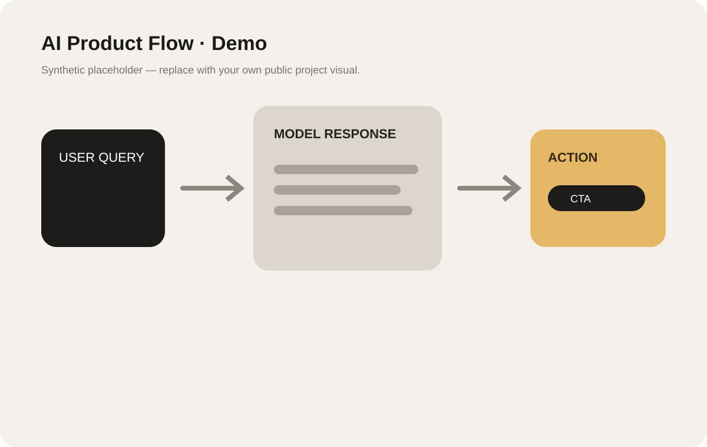
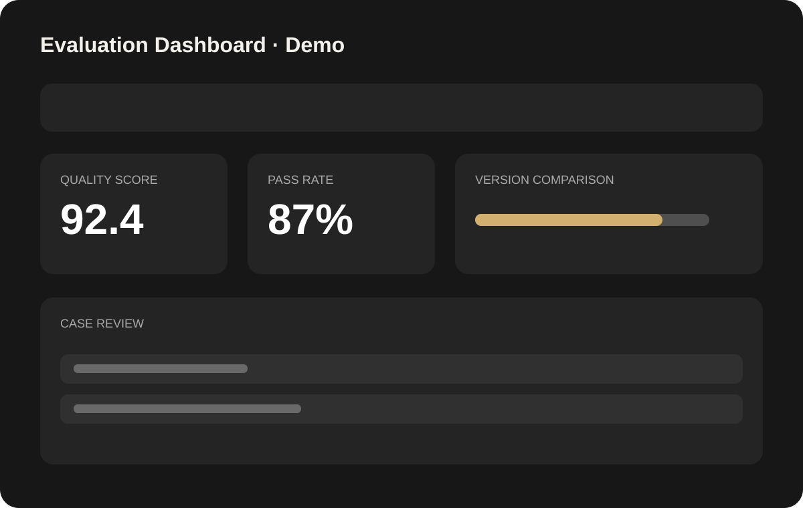
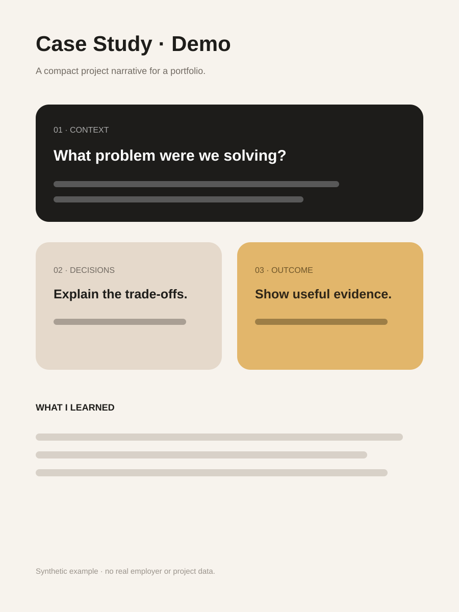

Signal Brief
A fictional AI briefing product that collects signals, clusters themes, and turns them into a concise daily view.
AI workflowInformation designPrototype
Use visual evidence to explain product thinking, workflows, prototypes, dashboards, research, or side projects.
A fictional AI briefing product that collects signals, clusters themes, and turns them into a concise daily view.

A sample flow showing how a user query can move through generation, evaluation, and a useful next action.

A fictional quality dashboard for tracking pass rate, score changes, and case-level review.

Turn one project into a compact narrative: context, decisions, execution, evidence, and learning.